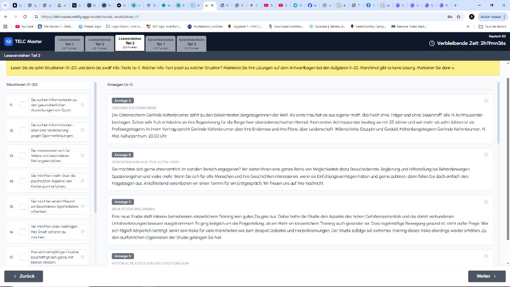
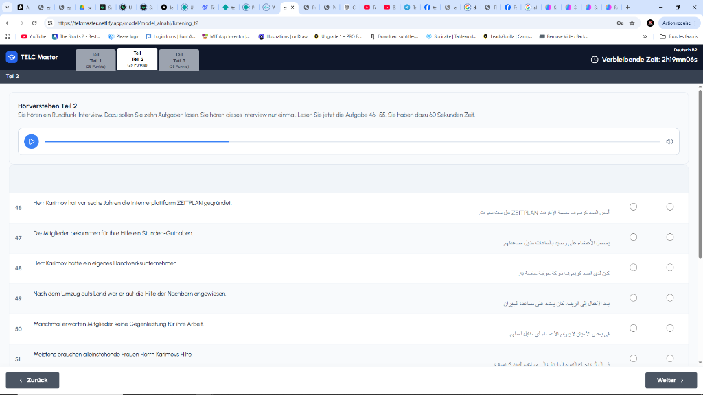
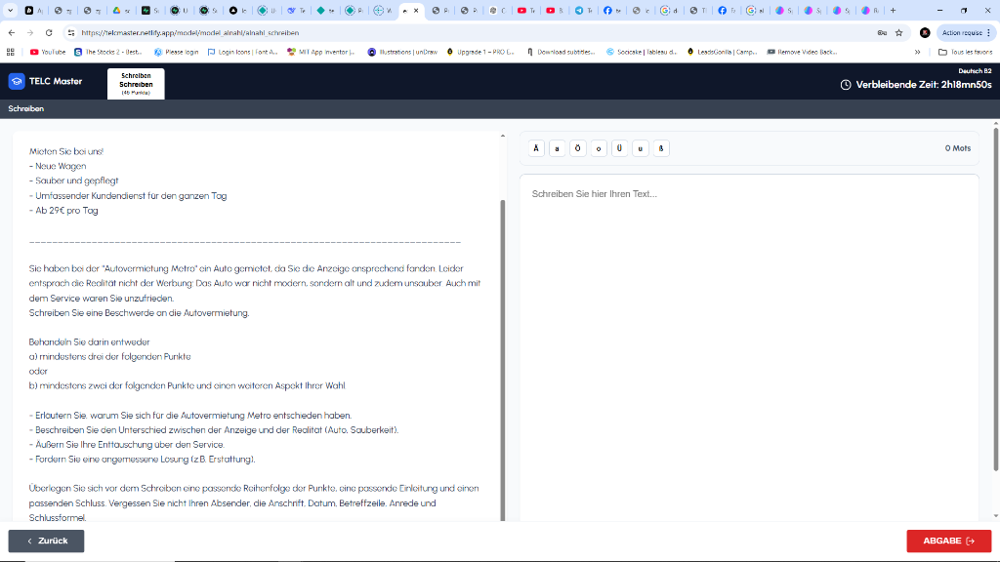
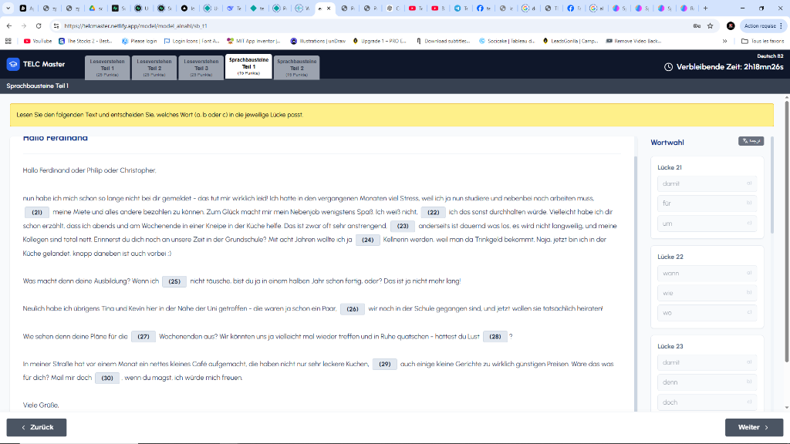
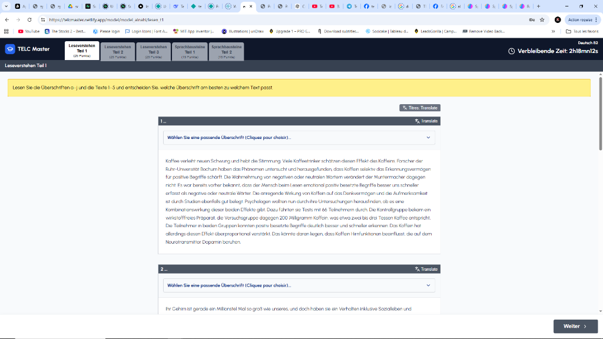

🚨 TELCMASTER B2
Préparez TELC B2 dans les mêmes conditions que l’examen réel — avant même le jour J.
La majorité des candidats utilisent encore des ressources obsolètes :
PDFs anciens non vérifiés
Drives remplis d'erreurs
Audios copiés ou mal structurés
Aucun entraînement réel à l'examen
Aucune correction personnalisée
Aucune mise à jour des vrais thèmes
La majorité des drives gratuits :
Une plateforme complète conçue spécialement pour la préparation TELC B2, utilisée par des candidats réels qui ont commencé à réussir dès la première tentative.
Commencer ma simulation réelleDécouvrez une immersion totale. Chaque section a été pensée pour reproduire exactement les conditions de l'examen réel.





Tout ce dont vous avez besoin pour réussir, en une seule plateforme.
Arabe ↔ Allemand. Compréhension totale de chaque exercice.
Même structure, même logique, même expérience que l'examen officiel.
Audios réels, lecture en allemand, transcript audio, traduction arabe.
Travail en condition réelle puis correction. Note automatique par Teil.
Comparaison immédiate des réponses avec ou sans correction.
Nouveaux thèmes d'examen ajoutés régulièrement.
Surveillance permanente des nouveaux examens officiels.
Stratégies, techniques et astuces par des professionnels.
Dialogues identiques au jury. Réponses prêtes à adapter.
Enregistrement vocal et feedback détaillé pour progresser.
Récompenses en espèces et commissions sur vos recommandations.
Support rapide et continu à tout moment.
Contenu vérifié et corrigé méticuleusement par des experts.
utilisent TELCMASTER pour leur préparation quotidienne.
grâce à une simulation identique à l'examen réel.
Plusieurs utilisateurs reviennent uniquement pour recommander la plateforme à leurs amis.
“Franchement TELCMASTER m’a beaucoup aidé surtout dans le Hörverstehen. Le jour de l’examen j’avais vraiment l’impression de déjà connaître le système. Les transcripts et les traductions m’ont fait gagner énormément de temps.”
“Avant j’étudiais avec des PDFs et des drives Facebook mais j’étais toujours perdu. Avec TELCMASTER tout est organisé et clair. J’ai réussi B2 dès la première fois.”
“Le meilleur avantage pour moi c’était la correction du Mündlich par des professeurs natifs. J’ai compris exactement ce que le jury attend.”
“wallah platforme behya barcha 😭 surtout Hörverstehen w transcript. 9bal kont nhafed codes w fel exam tdhaya3t.”
“TELCMASTER 5alletni n7ess rouhi deja fi l’examen 😅 même interface même logique. Le stress 9al barcha nhar l’examen.”
“Les nouveaux thèmes sont ajoutés rapidement et ça fait une énorme différence. On sent qu’il y a une vraie équipe derrière la plateforme.”
“sara7a a7sen 7aja enou tnajem t5adem sans lösung ba3d tchouf score mte3ek direct. Hedha 3aweni barcha bech na3ref niveau mte3i.”
“nansa7kom biha chabeb 🔥 plateforme منظمة ”
“wallah rat7etni m tarjma 😭 surtout fel Hörverstehen. Fhemt les reponses kont dima n8alet fihom.”
“Mündlich top 🔥 les dialogues kif ma y7ebouhom exactement fel examen.”
“Hmdlh nja7t session Décembre w merci nchallah fi mizen 7assenetkom équipe TELCMASTER.”
“Bravo wallah 👏 fier de l’équipe tunisienne TELCMASTER. Platforme niveau kbiiir barcha.”
Votre réussite inspire les autres candidats. Laissez-nous un message !
TELCMASTER n'est pas un simple outil d'étude.
Des tarifs transparents pour une préparation complète.
L'essentiel pour réussir l'écrit et l'écoute.
L'expérience complète pour l'excellence.
D’autres candidats :
Ne laissez pas votre réussite au hasard. Rejoignez TELCMASTER aujourd'hui.
Débloquer TELCMASTER maintenant